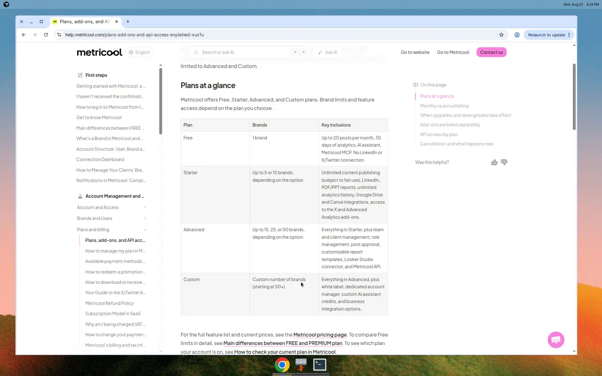
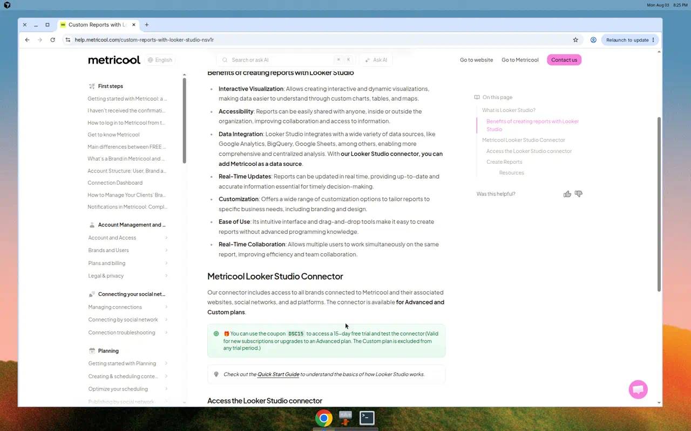
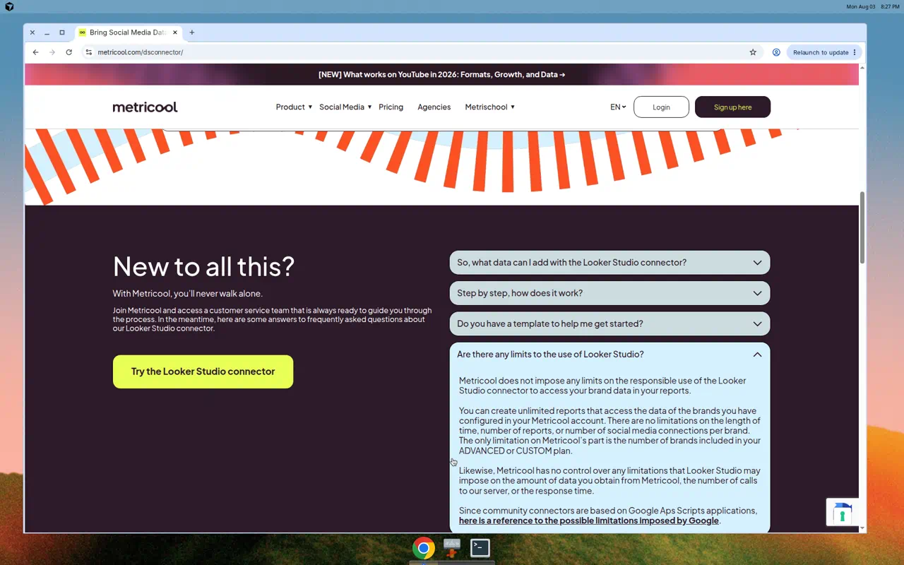

MKOF · Community Management · Documento interno
Propuesta Metricool + Looker Studio
1. Situación
Hoy gastamos aproximadamente USD 500 al año en Metricool. Queremos el plan más económico posible, pero trabajamos con Looker Studio: el conector solo está en Advanced. Starter sería más barato, pero cortaría ese flujo.
Gasto actual
Estimado de la suscripción vigente
Piso con Looker Studio
≈ USD 636/año lista · limpia marcas/add-ons
2. Restricción: Looker Studio
Sin el conector nativo de Metricool, los dashboards actuales dejan de actualizarse solos. Por eso el objetivo es el Advanced más chico, no Starter.
Sí (esencial)
- Programar y publicar
- Analítica e historial
- Looker Studio
- Informes PDF / PPT
Incluido en Advanced
- Conector Looker Studio
- API (Make / Zapier / n8n)
- Hasta 15 marcas
- Gestión de equipo si hace falta
3. Comparativa (pago anual, USD)
Referencia pública Metricool (ago 2026). Verificar monto exacto en la cuenta.
| Opción | Looker Studio | API | ≈ / año | Veredicto |
|---|---|---|---|---|
| Starter 5 | No | No | ~USD 240 | Más barato, no viable |
| Starter 10 | No | No | ~USD 432 | Sin Looker Studio |
| Advanced 15 | Sí | Sí | ~USD 636 | Recomendada |
4. Cómo bajar el gasto sin perder Looker Studio
- Ajustar al tramo de 15 marcas (si hoy hay más contratadas).
- Desconectar marcas inactivas.
- Cancelar add-ons innecesarios (X/Twitter, Advanced Analytics, etc.).
- Confirmar facturación anual.
- Si la lista (~USD 636) sube vs los ~USD 500 actuales, pedir a Metricool el precio exacto / retención de la cuenta.
5. Antes de cambiar el plan
- Confirmar que Looker Studio usa el conector Metricool (no solo CSV manual).
- Contar marcas activas (objetivo ≤ 15).
- Revisar add-ons y cancelar lo innecesario.
- Verificar que los dashboards siguen trayendo datos tras el cambio.
6. Pedido
Solicito autorización para ir a Advanced 15 marcas (anual) — piso viable con Looker Studio — y limpiar lo que no se use.
7. Evidencia (links + pantallazos)
Fuentes oficiales Metricool · capturas ago 2026. Carpeta evidencia/.
- metricool.com/pricing — Advanced lista Looker Studio + API (from $53/mo anual)
- Help: plans / API — tabla Advanced = Looker Studio + API
- Help: Looker Studio — “available for Advanced and Custom plans”
- metricool.com/dsconnector — conector requiere Advanced/Custom



